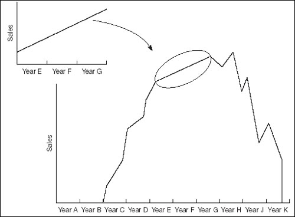

Patterns revisited
The previous chapter described pattern-hunting in some depth. If this is your first stop in this book it would be better to go back and review Chapter 9 before reading on. We will wait for you.
As always when reviewing numbers, do not forget the big picture. The patterns in Fig. 10.1 were very obvious, but you should always ask whether you are seeing the tip of the iceberg. The trend for the Expanding Company might be very different when viewed over 10 years (see Fig. 10.2).
Fig 10.2. The tip of the iceberg

Clearly, the longer the run of historical data you can examine, the more of the iceberg you will see. This helps you put things in context. Of course, what happened five years ago might be largely irrelevant now, but even knowing this will help you make a better forecast.
|
Projecting patterns
Recall that we split the sales figures into one-offs, the trend, the cycle, seasonality, and noise. Forecasting with a ruler would assume no special one-offs and no noise in the year ahead, extend mechanically the other patterns, and then glue them all together. For a better-educated forecast you would apply your knowledge and understanding of the environment to the trend, cycle and one-offs before extending them.
The kick-off meeting
For forecasting involving teamwork, hold a kick-off meeting at which the underlying economic assumptions and corporate plans are specified or agreed.
As already mentioned, you may not be able to split the trend and the cycle – so you might treat them as one component. Seasonality is assumed to be a given. If you are tempted to amend the seasonal adjustment factors this means that either you are not comfortable with your assessment of them in the first place, or you are putting a one-off influence in the wrong place. We will return to patterns in a moment.
‘There’s little doubt that the Government figures are honest. The problem is that the things the numbers are supposed to measure cannot be determined with precision. ... Unless one is aware of the pitfalls ... the statistics can become extremely misleading.’
—T.F. O’Leary, Jr.